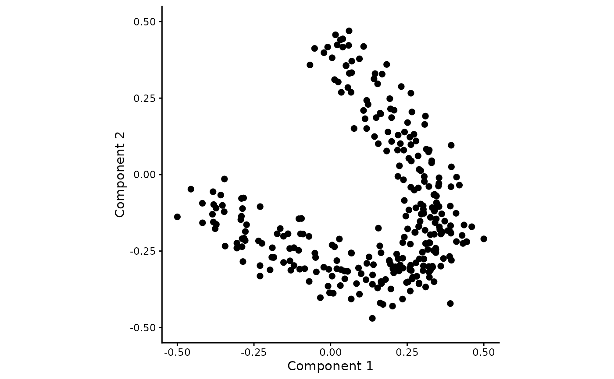
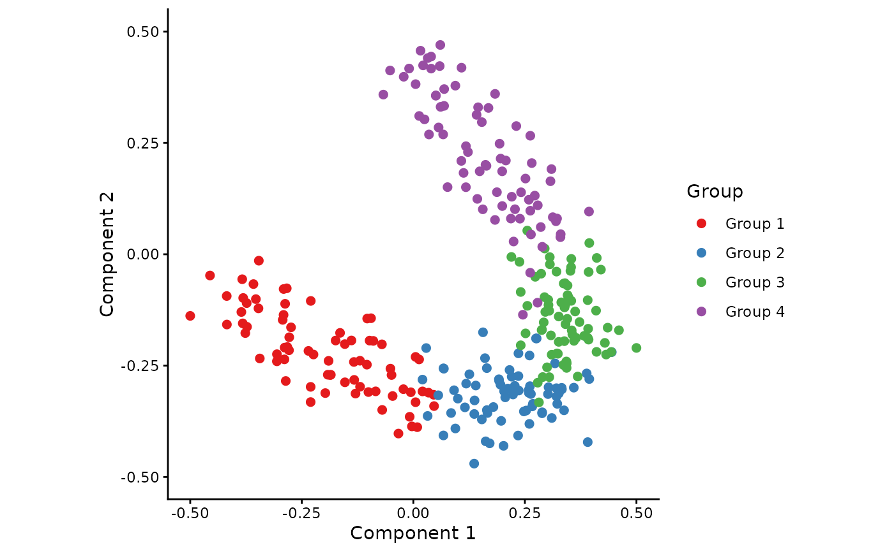
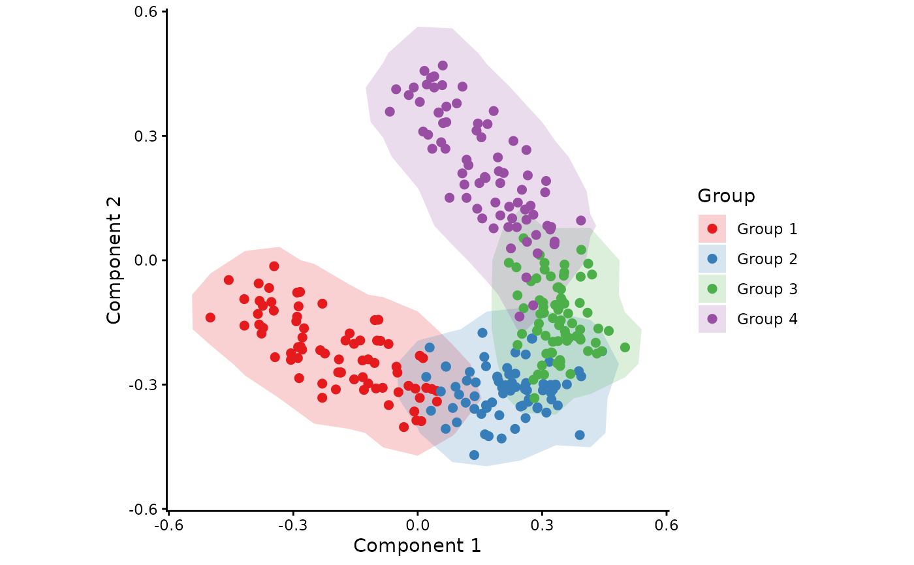
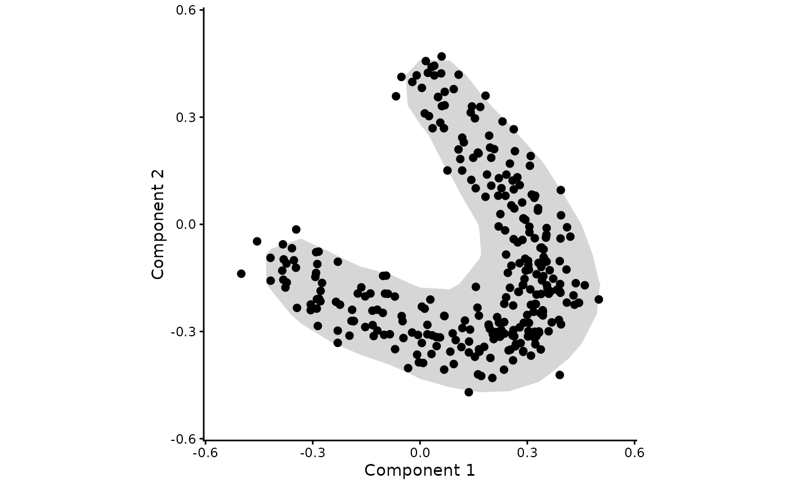
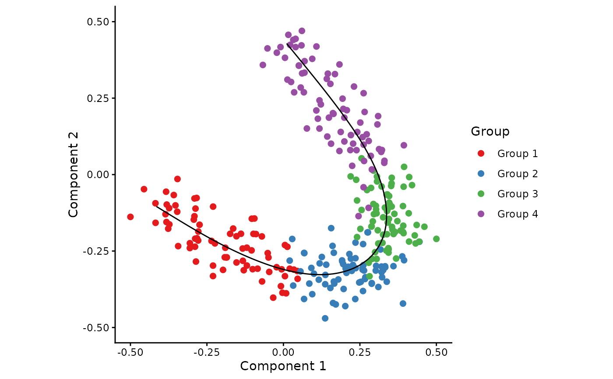
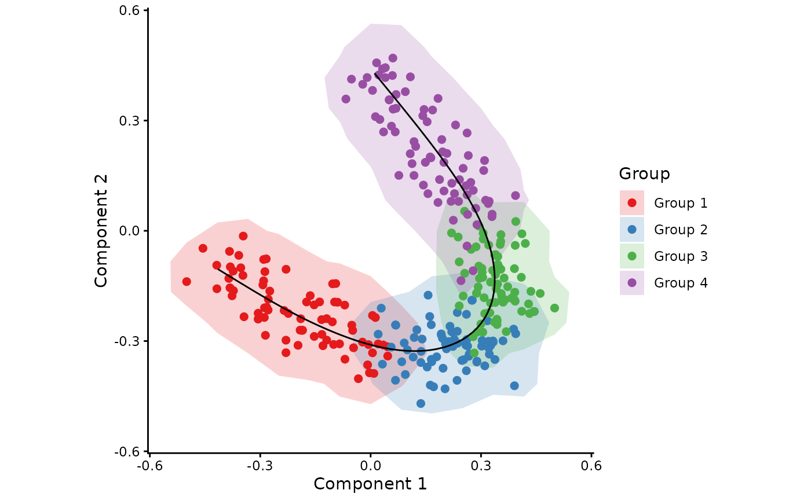
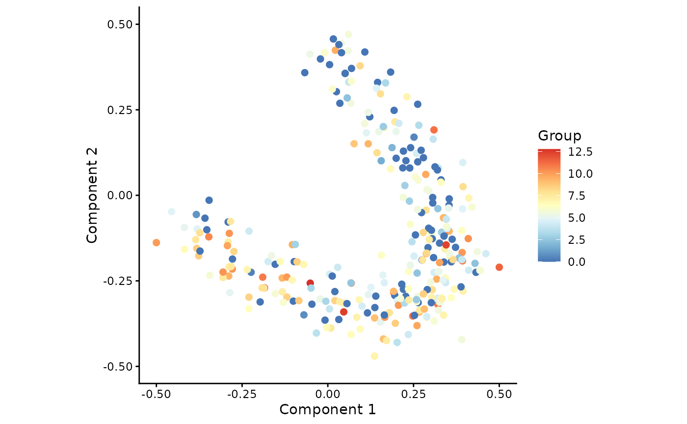

draw_trajectory_plot is used to plot samples after performing dimensionality reduction.
Additional arguments can be provided to colour the samples, plot the trajectory inferred by SCORPIUS,
and draw a contour around the samples.
Usage
draw_trajectory_plot(
space,
progression_group = NULL,
path = NULL,
contour = FALSE,
progression_group_palette = NULL,
point_size = 2,
point_alpha = 1,
path_size = 0.5,
path_alpha = 1,
contour_alpha = 0.2
)Arguments
- space
A numeric matrix or a data frame containing the coordinates of samples.
- progression_group
NULLor a vector (or factor) containing the groupings of the samples (defaultNULL).- path
A numeric matrix or a data frame containing the coordinates of the inferred path.
- contour
TRUEif contours are to be drawn around the samples.- progression_group_palette
A named vector palette for the progression group.
- point_size
The size of the points.
- point_alpha
The alpha of the points.
- path_size
The size of the path (if any).
- path_alpha
The alpha of the path (if any).
- contour_alpha
The alpha of the contour (if any).
Examples
## Generate a synthetic dataset
dataset <- generate_dataset(num_genes = 500, num_samples = 300, num_groups = 4)
space <- reduce_dimensionality(dataset$expression, ndim = 2)
groups <- dataset$sample_info$group_name
## Simply plot the samples
draw_trajectory_plot(space)
#> Ignoring unknown labels:
#> • colour : "Group"
#> • fill : "Group"

## Colour each sample according to its group
draw_trajectory_plot(space, progression_group = groups)
#> Ignoring unknown labels:
#> • fill : "Group"

## Add contours to the plot
draw_trajectory_plot(space, progression_group = groups, contour = TRUE)

## Plot contours without colours
draw_trajectory_plot(space, contour = TRUE)
#> Ignoring unknown labels:
#> • colour : "Group"
#> • fill : "Group"

## Infer a trajectory and plot it
traj <- infer_trajectory(space)
draw_trajectory_plot(space, progression_group = groups, path = traj$path)
#> Ignoring unknown labels:
#> • fill : "Group"

draw_trajectory_plot(space, progression_group = groups, path = traj$path, contour = TRUE)

## Visualise gene expression
draw_trajectory_plot(space, progression_group = dataset$expression[,1])
#> Ignoring unknown labels:
#> • fill : "Group"
